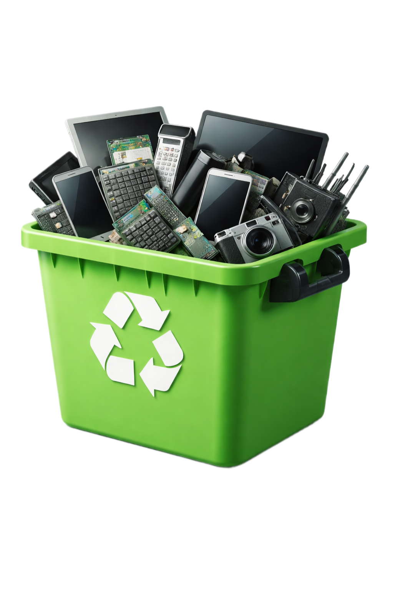

01
Evite a poluição ambiental
Equipamentos eletrônicos possuem metais pesados e substâncias tóxicas que podem contaminar o solo, rios e o ar quando descartados incorretamente.
Ajude o planeta descartando seus equipamentos eletrônicos de forma correta, segura e sustentável.
Toneladas de lixo eletrônico produzidas por ano.
Apenas uma pequena parte é reciclada corretamente.

Pequenas atitudes fazem grande diferença para o meio ambiente e para a qualidade de vida das próximas gerações.
Equipamentos eletrônicos possuem metais pesados e substâncias tóxicas que podem contaminar o solo, rios e o ar quando descartados incorretamente.
O descarte consciente reduz impactos ambientais e contribui para cidades mais limpas, organizadas e sustentáveis para todos.
Informar e conscientizar as pessoas é essencial para reduzir o lixo eletrônico e incentivar hábitos mais responsáveis no dia a dia.
Com o avanço acelerado da tecnologia, aparelhos como celulares, notebooks e tablets são substituídos com cada vez mais frequência. Isso contribui diretamente para o aumento constante da geração de lixo eletrônico no mundo.
Esse crescimento no descarte de resíduos eletrônicos gera impactos ambientais significativos, como a contaminação do solo e da água por substâncias tóxicas. Além disso, muitas pessoas ainda não sabem como ou onde realizar o descarte correto desses materiais, o que agrava ainda mais o problema.